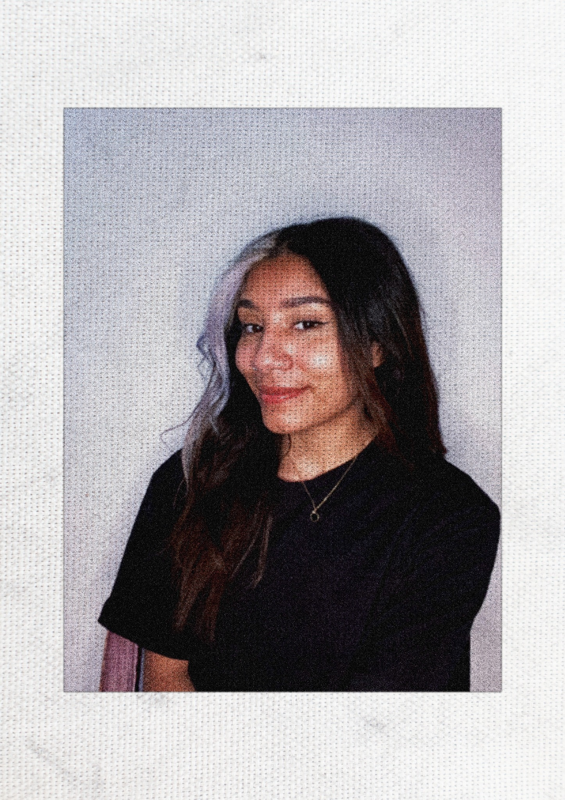

In a nutshell

MOUNIA LANOU ✦
Creative Director & Copywriter
Based in Paris - Available worldwide.
I build sharp social ecosystems, direct brand content, and edit video with strong pacing. I bridge pop culture, street culture, and clean visual execution to place brands where people actually look.
Over the past few years, I’ve shaped campaigns, visual identities, and video content with teams at YARD, New Business, and Webedia.
I’ve driven creative direction and asset production for brands like Havana Club, UGG Europe, Source Alma, Sushi Shop, and Canderel, as well as major creators and media powerhouses including Joyca, Domingo (Popcorn), and Zack Nani.
As a Creative, I don't stop at static frames: I think natively in motion, cuts, and screen rhythm.
Scope: Creative Direction, Copywriting, Social Campaigns, Video Pacing & Editing, Motion, Talent Curation.